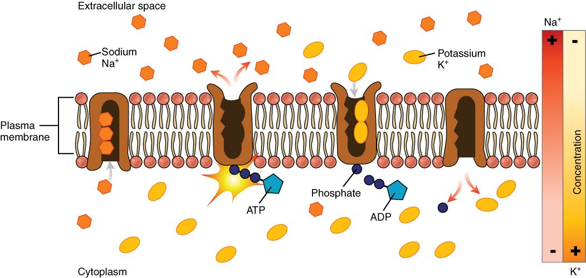

Active transport and vesicles
Active transport requires the cell to supply energy, and it usually moves a substance against its gradient.
Part 1 · Clinical hook
Why this matters
Mrs. Lindgren, 81, takes digoxin for her heart. Confused about her pill box, she took several days' doses at once. Now she is nauseated, sees yellow halos around lights, and her heart rhythm is irregular. Her blood potassium is 6.4 mmol/L, well above normal. Digoxin works by blocking some of the sodium–potassium pumps in her cells. At this dose it has blocked so many that potassium is no longer being pumped back into her cells, and it is building up in her plasma.
Part 2 · Foundations
What this builds on
Part 3 · Prerequisite check
Quick check before you start
1. What happens when a cell hydrolyzes ATP?
- It splits off a phosphate group and releases energy
- It adds a phosphate group and stores energy
- It releases oxygen for the cell to use
Show the answer
ATP hydrolysis splits off the last phosphate group, making ADP and releasing energy that proteins can use to do work.
- Correct: It splits off a phosphate group and releases energy:
- It adds a phosphate group and stores energy:
- It releases oxygen for the cell to use:
2. In passive transport, what supplies the energy for movement?
- ATP split by the membrane protein
- The substance's own gradient
- Vesicles fusing with the membrane
Show the answer
Passive transport moves a substance down its gradient, and the gradient itself supplies the energy. The cell spends no ATP.
- ATP split by the membrane protein:
- Correct: The substance's own gradient:
- Vesicles fusing with the membrane:
3. What is a vesicle?
- A protein tunnel through the membrane
- A fiber of the cytoskeleton
- A small sphere of membrane that carries cargo
Show the answer
A vesicle is a small sphere of membrane that buds off one membrane, carries cargo, and fuses with another.
- A protein tunnel through the membrane:
- A fiber of the cytoskeleton:
- Correct: A small sphere of membrane that carries cargo:
Part 4 · Anatomy panel
Anatomy

With labels hidden, select a box to reveal its label.
Part 5 · Causal chain
How it works, step by step
- A toxic dose of digoxin binds to and blocks many sodium–potassium pumps.Fewer sodium ions are pumped out and fewer potassium ions are pumped in each second.
- Sodium keeps leaking into cells and potassium keeps leaking out, down their gradients, but the pumps no longer return them.Sodium rises inside the cells, and potassium rises in the plasma.
- Sodium inside heart cells rises, so the sodium gradient across their membranes shrinks.The sodium–calcium antiporter, which spends that gradient, pushes calcium out more slowly.
- Calcium builds up inside the heart cells.At a therapeutic dose, contractions grow stronger; at a toxic dose, the calcium overload triggers irregular heart rhythms.
Part 6 · Key ideas
Key ideas
- Active transport (active = acting, doing work) is movement of a substance across a membrane that requires the cell to supply energy, usually from ATP. Most of it moves a substance against its gradient, from low concentration to high, which never happens on its own.
- In primary active transport, the carrier itself splits ATP and uses the released energy to move a substance against its gradient. A carrier that does this is called a pump, and because it splits ATP it is also an enzyme (an ATPase).
- In secondary active transport, or cotransport, the carrier splits no ATP. It lets sodium flow in down the gradient the sodium–potassium pump built and uses that energy to move a second substance against its gradient. A symporter (sym- = together, port = carry) moves both the same way, as with sodium and glucose; an antiporter (anti- = against) moves them opposite ways, as with sodium in and calcium out.
- In endocytosis (endo- = within, cyto- = cell) a cell folds a patch of plasma membrane around outside material and pinches it off as a vesicle inside. In receptor-mediated endocytosis, membrane proteins bind one specific substance first, so that substance is taken in. In exocytosis (exo- = outside) a vesicle fuses with the plasma membrane and releases its contents outside. Both spend ATP.
Part 7 · Core concept
Core concepts
Part 8 · Misconception
A common mistake
The wrong idea: Secondary active transport does not depend on ATP, because the symporter or antiporter never splits ATP.
What actually happens: The carrier itself splits no ATP, but the sodium gradient it spends was built by the sodium–potassium pump, which splits ATP with every cycle. Block the pump, or let a cell run out of ATP, and sodium leaks in until the gradient shrinks. Symporters and antiporters then slow down with it. Secondary active transport is powered by ATP one step removed.
Part 9 · Retrieval check
Check yourself
Anything you miss goes into your review queue.
1. Mr. Sato, 76, accidentally takes a large overdose of digoxin, which blocks sodium–potassium pumps. His plasma potassium rises to 6.5 mmol/L. What best explains the rise?
- Digoxin carries potassium into the blood
- Potassium is no longer pumped back into cells
- His cells are now pumping extra potassium out into the plasma
- Sodium is being converted into potassium
Show the answer
Potassium leaks out of cells all the time, and the sodium–potassium pump brings it back in. With many pumps blocked, potassium keeps leaking out but is not returned, so it builds up in the plasma.
- Digoxin carries potassium into the blood: Digoxin contains no potassium. It raises plasma potassium by blocking the pump.
- Correct: Potassium is no longer pumped back into cells: Correct. Blocked pumps stop returning leaked potassium to the cells.
- His cells are now pumping extra potassium out into the plasma: The pump moves potassium into cells, not out. Blocking it cannot make cells pump more potassium out.
- Sodium is being converted into potassium: Ions are not converted into other ions in the body. The change comes from where potassium sits, not from making new potassium.
2. A poison completely blocks the sodium–potassium pumps of a cell that takes up glucose on a sodium–glucose symporter. Predict each change over the next hour.
| Variable | Change |
|---|---|
| Sodium concentration inside the cell | — |
| Potassium concentration inside the cell | — |
| Cell volume | — |
| Glucose uptake by the symporter | — |
| Number of pump proteins in the membrane | — |
Show the answer
Stopping the pump lets sodium and potassium run down their gradients. The cell swells as sodium and water enter, and secondary active transport slows because the sodium gradient it spends is shrinking.
- Sodium concentration inside the cell: up. Sodium keeps leaking in down its gradient, and the blocked pumps no longer send it back out.
- Potassium concentration inside the cell: down. Potassium keeps leaking out, and the pumps no longer bring it back in.
- Cell volume: up. Sodium builds up inside and is no longer effectively held outside. Water follows the extra solute into the cell by osmosis, and the cell swells.
- Glucose uptake by the symporter: down. The symporter spends the sodium gradient. As sodium builds up inside, the gradient shrinks, so there is less energy to drag glucose in.
- Number of pump proteins in the membrane: no change. The poison blocks the pumps that are there; it does not remove them from the membrane.
3. A symporter in a kidney tubule cell carries glucose into the cell against its gradient but never splits ATP. Where does the energy for this uphill movement come from?
- Sodium moving into the cell down its electrochemical gradient
- Glucose moving down its own concentration gradient
- Heat released by the kidney tubule
- The pressure of fluid in the tubule
Show the answer
Sodium rushes into the cell down its steep electrochemical gradient, and the symporter couples that downhill movement to glucose's uphill movement. The sodium gradient itself was built by the sodium–potassium pump using ATP.
- Correct: Sodium moving into the cell down its electrochemical gradient: Correct. The sodium gradient powers the symporter; the pump built that gradient with ATP.
- Glucose moving down its own concentration gradient: Glucose is moving against its gradient here, so its own gradient cannot supply the energy.
- Heat released by the kidney tubule: Heat is not a usable energy source for moving a solute across a membrane.
- The pressure of fluid in the tubule: Fluid pressure drives filtration, not carrier transport of glucose into a cell.
4. This sequence describes the sodium–potassium pump. One step is wrong. Which one?
- Three sodium ions bind to the pump on the extracellular side
- ATP is split and a phosphate attaches to the pump
- The pump changes shape and releases sodium outside the cell
- Two potassium ions bind from the extracellular fluid
- The phosphate comes off, and potassium is released into the cytoplasm
Show the answer
The pump moves sodium out of the cell, so each cycle starts with three sodium ions binding on the cytoplasm side. Sodium picked up from outside would be moved the wrong way.
- Correct: Three sodium ions bind to the pump on the extracellular side: This is the error. Sodium binds on the cytoplasm side; the pump carries it out of the cell.
- ATP is split and a phosphate attaches to the pump: This step is right. Phosphorylation by ATP powers the shape change.
- The pump changes shape and releases sodium outside the cell: This step is right. The shape change opens the pump toward the outside, and sodium is released into the extracellular fluid.
- Two potassium ions bind from the extracellular fluid: This step is right. The outward-facing pump picks up potassium from outside.
- The phosphate comes off, and potassium is released into the cytoplasm: This step is right. Losing the phosphate returns the pump to its inward-facing shape, releasing potassium inside.
5. Leo, 12, has a blood cholesterol level several times normal. His cells make normal cholesterol-carrying particles, but the surface proteins that should bind those particles are defective. Which process has failed?
- Phagocytosis
- Receptor-mediated endocytosis
- Exocytosis
- Simple diffusion of cholesterol
Show the answer
Cells take up cholesterol-carrying particles by receptor-mediated endocytosis: surface proteins bind the particles and gather in coated pits that pinch off as vesicles. With those proteins defective, the particles stay in the blood. This is familial hypercholesterolemia.
- Phagocytosis: Phagocytosis engulfs large particles such as bacteria and does not depend on these specific surface proteins.
- Correct: Receptor-mediated endocytosis: Correct. Without working surface proteins, the specific uptake of cholesterol-carrying particles fails.
- Exocytosis: Exocytosis releases material from cells. The problem here is taking material in.
- Simple diffusion of cholesterol: The particles are far too large to diffuse across the bilayer. They enter by endocytosis.
6. A child with cholera, losing large amounts of water and salt through the gut, is given oral rehydration solution, which contains glucose as well as salt. Why does adding glucose help the child absorb sodium and water?
- Glucose makes the gut contents hypertonic to the cells
- Glucose blocks the sodium–potassium pump
- Glucose opens aquaporins directly
- Glucose and sodium enter on a shared symporter
Show the answer
Intestinal lining cells take up glucose on a symporter that carries sodium in with it. Each glucose molecule pulls sodium into the cells, and water follows the absorbed solutes by osmosis.
- Glucose makes the gut contents hypertonic to the cells: Making the gut contents hypertonic would draw water into the gut, which is the opposite of what helps.
- Glucose blocks the sodium–potassium pump: Blocking the pump would shrink the sodium gradient and slow the symporter, reducing absorption.
- Glucose opens aquaporins directly: Glucose does not open aquaporins. Water follows the absorbed solutes by osmosis.
- Correct: Glucose and sodium enter on a shared symporter: Correct. The sodium–glucose symporter brings sodium in with glucose, and water follows.
Part 10 · Summary
Summary
Active transport requires the cell to supply energy, and it usually moves a substance against its gradient. In primary active transport, a pump splits ATP directly. The sodium–potassium pump moves three sodium ions out and two potassium ions in per ATP, builds the sodium gradient and controls cell volume. In secondary active transport (cotransport), a symporter or antiporter spends the sodium gradient to move glucose, calcium or hydrogen ions uphill, so it fails when the pump fails. Vesicle transport uses ATP too: endocytosis (phagocytosis, pinocytosis, receptor-mediated endocytosis) brings bulk material in, and exocytosis releases products (cellular secretion) and adds membrane to the surface.
Part 11 · Up next